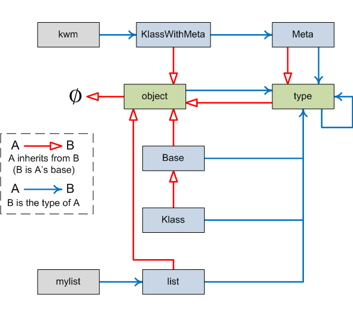

The aim of this post is to present a succinct diagram that correlates some basic properties of all Python objects with the fundamental types type and object. This is not a tutorial - it's more of a reference snapshot that puts things in order. To properly understand why things are the way they are, check out the existing and future writings in the Python internals category of this blog, as well as other resources available online.
In Python, every object has a type. Types are also objects - rather special objects. A type object, like any other object, has a type of its own. It also has a sequence of "base types" - in other words, types from which it inherits. This is unlike non-type objects, which don't have base types.
Consider this exemplary piece of code (Python 3):
# Some types
class Base:
pass
class Klass(Base):
pass
class Meta(type):
pass
class KlassWithMeta(metaclass=Meta):
pass
# Non-types
kwm = KlassWithMeta()
mylist = []
The following diagram describes the types and bases of all the objects created in this code. Non-type objects only have types and no bases:
Some interesting things to note:
- The default type of all new types is type. This can be overridden by explicitly specifying the metaclass for a type.
- Built-in types like list and user-defined types like Base are equivalent as far as Python is concerned.
- The special type type is the default type of all objects - including itself. It is an object, and as such, inherits from object.
- The special type object is the pinnacle of every inheritance hierarchy - it's the ultimate base type of all Python types.
- type and object are the only types in Python that really stand out from other types (and hence they are colored differently). type is its own type. object has no base type.